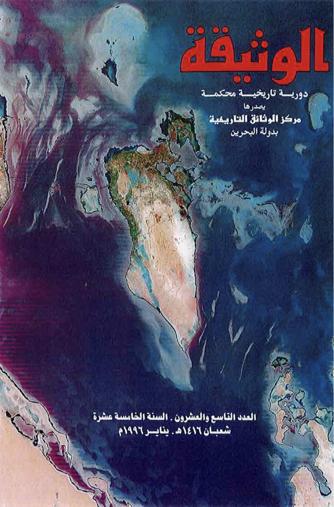
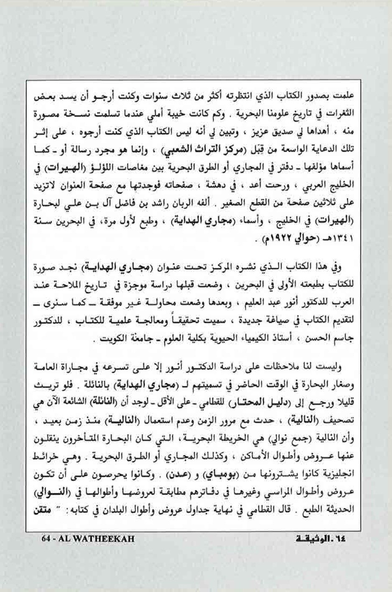
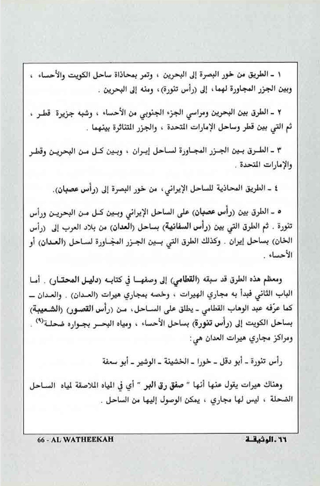
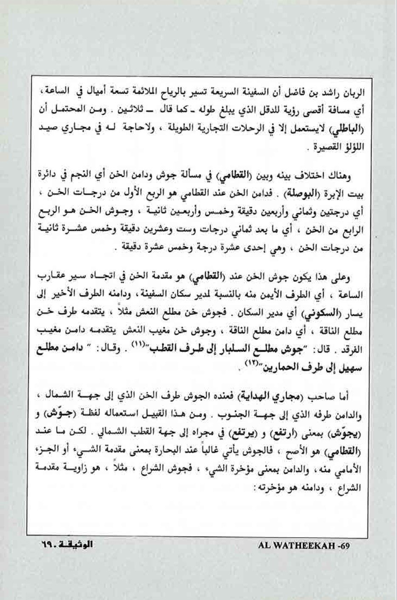
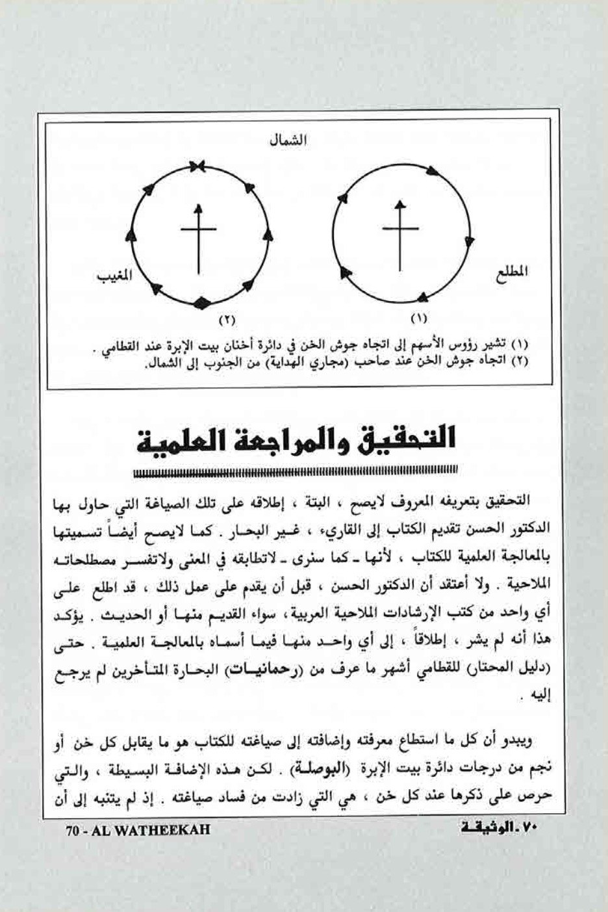
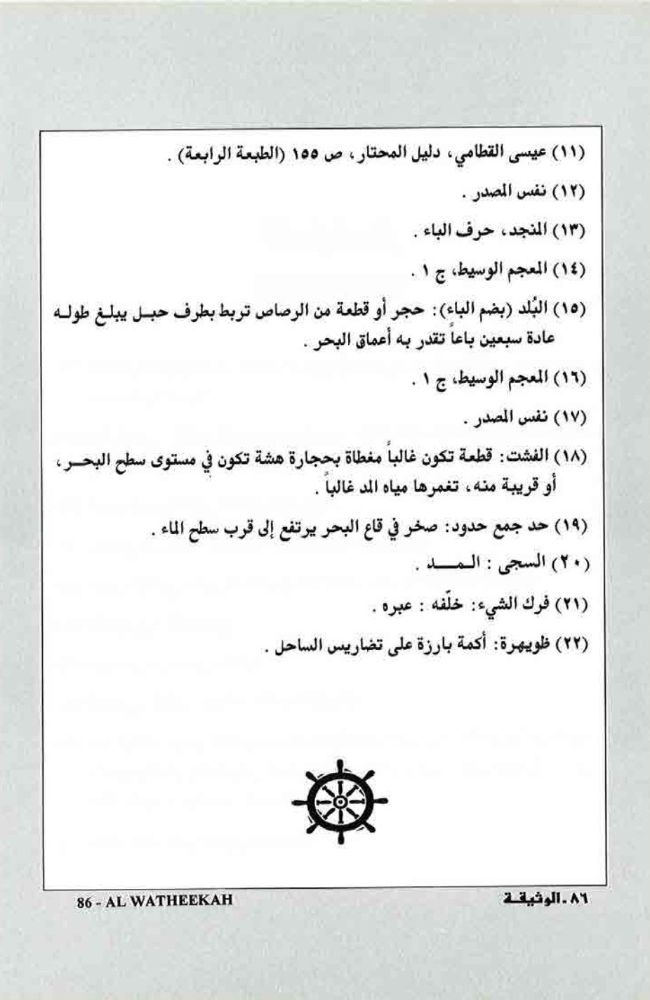

يناير ١٩٩٦ · مقال في مجلة الوثيقة، العدد التاسع والعشرون، السنة الخامسة عشرة، شعبان ١٤١٦هـ (يناير ١٩٩٦م)، مركز الوثائق التاريخية، البحرين، ص ٦٤ إلى ٧٠ و٨٥ و٨٦
الوثيقة، البحرين: دليل المحتار لعيسى القطامي مقياسا لمجاري الهداية
ما هي
مراجعة للطبعة الجديدة من كتاب «مجاري الهداية» للربان راشد بن فاضل آل بن علي، وهو دفتر في مجاري الهيرات طبع أول مرة في البحرين سنة ١٣٤١هـ (حوالي ١٩٢٢م). ويقيس الكاتب الكتاب ومحققيه على «دليل المحتار» لعيسى القطامي في مواضع كثيرة. ففي الصفحة ٦٤: لو رجع إلى «دليل المحتار» للقطامي لوجد أن «النائلة» تصحيف «النالية» وهي الخريطة البحرية، وينقل قول القطامي عن الخرائط الإنجليزية التي كانوا يشترونها من بومباي وعدن. وفي الصفحة ٦٥ ينقل قوله: «وهذه المجاري مستخرجة من النوالي الطابع الجديد». وفي الصفحة ٦٦: «ومعظم هذه الطرق قد سبقه القطامي إلى وصفها في كتابه دليل المحتار»، و«العدان كما عرّفه عبد الوهاب القطامي». وفي الصفحة ٦٨: لا نجد في مجاري الهداية إشارة إلى الباطلي، أداة قياس سرعة السفينة عند البحارة المتأخرين «أمثال القطامي وابن ماطر». وفي الصفحتين ٦٩ و٧٠: في مسألة جوش الخن ودامنه «ما عند القطامي هو الأصح»، مع رسم لاتجاه جوش الخن في دائرة بيت الإبرة عند القطامي، وأن المحقق لم يرجع إلى «دليل المحتار للقطامي أشهر ما عرف من رحمانيات البحارة المتأخرين». وتذكر الهوامش في الصفحتين ٨٥ و٨٦ دليل المحتار، الطبعة الرابعة، ص ٦٩ و١٥٥ و١٥٩، و«معجم المصطلحات البحرية» لعبد الوهاب عيسى القطامي، الملحق بآخر كتابه «الصيد والتنقل والتجارة في البحار» الملحق بكتاب والده دليل المحتار، ص ٢٦٥.
أهميتها
مجلة تاريخية بحرينية تعد دليل المحتار لعيسى المرجع المعتمد لبحارة الخليج العربي، وتستشهد بمعجم المصطلحات البحرية لابنه عبدالوهاب.
صور الصفحات









أسماء أخرى
المصادر
الوثيقة، العدد ٢٩، السنة ١٥، شعبان ١٤١٦هـ (يناير ١٩٩٦م)، مركز الوثائق التاريخية، البحرين، ص ٦٤ إلى ٧٠ و٨٥ و٨٦
كيف كُتب هذا النص: مصورة من المجلة المطبوعة. لا يظهر اسم الكاتب في الصفحات المرسلة، ويذكر في الهامش الثاني كتابه «الدليل البحري عند العرب» (الكويت، ١٩٨٣). والصفحة ٨٢ لا تذكر العائلة فلم تدرج.
افتح في الموقع التفاعلي